- 一年级数学（上册）
- 10以内的分与合
- 概念
- “分”，即“4能分成1和3”，读法为引号中的内容
- “合”，即“1和3组成4”，读法为引号中的内容
- 整体：多个部分合在一起，形成整体
- 部分：整体分成多个部分
- 读法
- 读分合式时，最好要按照分的读法读一遍、合的读法也读一遍，分合读法都读了，才算读完整。
- 记忆
- 分合的记忆通过死记硬背效果不好，可以多使用圆片、小棒做游戏，使用单手手指做游戏给孩子直观体验寓教于乐。
- 分合式的练习要大量做题，结合通过教具、手指游戏获得的直观体验，效果才佳。
- 规律
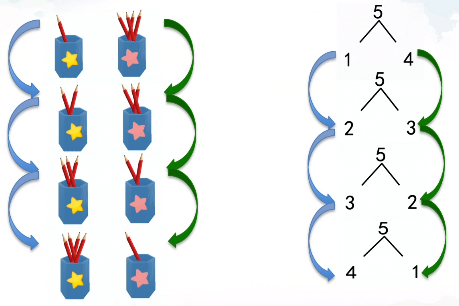
- 从上到下的每次分法，左边笔筒里的铅笔一次比一次多一支，右边笔筒里的铅笔一次比一次少一支。
- 从上到下看分合式，分式左侧的数一次比一次大1，右侧的数一次比一次小1，5这个“总数”是不变的。
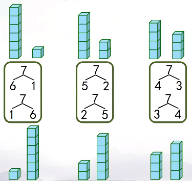
分合式中，交换部分的位置，整体不变。无论1这部分、6这部分在左、右哪一边，1和6都能组成7；无论2这部分、5这部分在左、右哪一边，2和5都能组成7；无论3这部分、4这部分在左、右哪一边，3和4都能组成7。
- 多重分与合
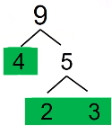
- 加减法
- 概念
- 加法：将部分合成整体求整体
- 减法：从整体去掉部分求另一部分
- 算式：知道什么是算式，见到算式知道是算式。
- 加数
- 减数
- 被减数
- 得数
- 和
- 差
- 身体动作
- 加法：伸出左手是一部分，伸出右手是另一部分，两手合在一起，是将两部分合在一起。让孩子跟着家长一起练习加法含义的身体动作。
- 减法：双臂各划半圈双掌合拢表示整体，左手向左下方移出表示去掉，平放摊开右手表示剩下。“从4个气球（双臂各划半圈双掌合拢表示整体）去掉飞走的1个气球（左手向左下方移出表示去掉）还剩3个气球（平放摊开右手表示剩下）”。
- 10以内加减法计算
- 摆学具（圆片、小棒、计数器）计算。不要忽略，这让孩子有直观认识，形成直观记忆。
- 手指计算。不要忽略，这让孩子有直观认识，形成直观记忆。
- 使用分与合计算
- 通过分与合计算，认识到分与合、加法、减法之间的关系。

- 4+2=6，是把4这部分、2这部分合起来求整体，整体是6，对应分合中的合，2和4组成6。
- 2+4=6，是把2这部分，4这部分合起来求整体，整体是6，对应分合中的和，2和4组成6。
- 6-4=2，是把6这个整体去掉4这部分，求另一部分，另一部分是2，对应分合中的分，6能分成2和4，去掉4这部分，另一部分就是2啦。
- 6-2=4，是把6这个整体去掉2这部分，求另一部分，另一部分是4，对应分合中的分，6能分成2和4，去掉2这部分，另一部分就是4啦。

- 通过分合式，写出2个加法算式、2个减法算式（两部分相同，如8分成4和4，则写出1个加法算式、1个减法算式）。
- 对加法交换律有直观认识
- 分合式中，交换部分的位置，整体不变。所以交换加号左右两侧数字的位置，总数（和）不变。
- 从左到右依次按顺序计算
- 连加
- 连减
- 加减混合
- 熟练口算
- 加法、减法之间的关系
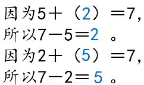
- 大于10小于20的加法
- 10加个位数
- 凑十法
- 使用分与合，分小的加数，是分开的一部分与另一个加数之和为10。
- 熟练口算
- 解决问题
- 概念
- 数学信息：可以在图中、文字中得到的信息。
- 能够在图片、文字中识别出数学信息，准确用语言描述数学信息。
- 知道大括号表示整体。
- 认识到文字信息要比图片信息更精确。
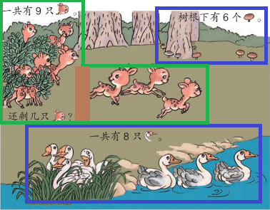
文字信息比图片信息更准确，因为图中有些事物被挡住了，数字能够更准确的说明信息。比如上图中的小鹿，在图中数，极有可能数出8只，但数字信息是一共有9只，图中的小鹿，有一只只露出了身子，还有一只只露出了头，所以图片中的小鹿非常容易数错，数字信息比图片信息更准确；再比如说蘑菇，数字信息说树根下有6个蘑菇，在图中数一数，树根下能看到的只有5个蘑菇，其实还有一个蘑菇被树干挡住了看不到，所以数字信息比图片信息更准确；再比如说鹅，数字信息是一共有8只，但图中只能够数出来7只，其实还有1只被芦苇丛挡住了，所以文字信息比图片更准确。
- 能够区分无关信息。
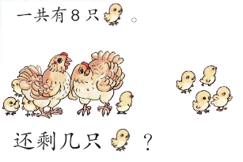
下图中2只大母鸡是无关信息，需要在解决问题时排除此信息，正确的算式是8-4=4，而不是10-4=6。
- 能够找到隐藏的数学信息。
- 小华左边有4人，右边有5人，一共几人？小华本人（1人）是隐藏的数学信息。
- 能够在复杂图片中对数学信息进行简单的分类。
图中的数学信息较多，应指导孩子将信息分成3类，小鹿一类、蘑菇一类、鹅一类。按照分类，分别讲出数学信息
- 问题：疑问句。
- 知道小问号表示问题。
- 通过小问号的位置，能够知道是求整体还是求部分。
- 问号在大括号中间，求整体
- 问号在大括号两端，求部分
- 数学问题：基于数学信息，提出问题，形成完整的数学问题。
- 解答问题：列出算式，计算结果。
- 验证答案：通过数一数、分与合、加减法验证结果是否正确，并完整的回答问题。
- 步骤
- 提出问题
- 知道完整的数学问题由数学信息和问题组成，数学信息必需完整。
- 整体去掉部分求另一部分，就必须要知道整体信息、被去掉部分的信息，才能用减法计算另一部分。
- 部分合成整体，就必须要知道各部分的信息，才能用加法计算整体。
- 有足够的数学信息，就能提出完整的数学问题。如果知道各部分的信息，就能提出通过部分合在一起求整体的数学问题；如果知道整体和一部分，就能提出从整体去掉一部分求另一部分的数学问题了。
- 解答问题
- 能够正确的思考问题。能够使用画图（使用简单图形和格式代表数学信息）的方式辅助思考。
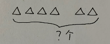
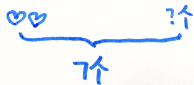
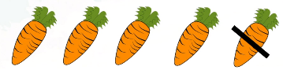
- 能够列出加法算式解决已知部分求整体的数学问题。
- 能够列出减法算式解决已知整体去掉部分，求另一部分的数学问题。
- 能够列出连加、连减、加减混合算式解决数学问题。
- 验证答案
- 通过数一数、分与合、加减法验证结果是否正确。
- 完整的回答问题。不能只回答10或“10个”，要完整的回答“一共有10个小球。”
- 题型和练习
- 小华左边有4人，右边有5人，一共几人？小华本人（1人）是隐藏的数学信息。
- 立体图形
- 玩过积木，认识球、圆柱、长方体、正方体。
- 直观认识
- 以培养兴趣为主，千万不要讲解面、棱、角的概念，只要孩子看到面知道是面，看到棱知道是棱，看到角知道是角，有这种直观认识就可以了。
对正方形的认识仅限于平平的、方方正正的即可，千万不要试图让孩子理解四边相等，都是直角等高深抽象定义，孩子接受不了，更会失去兴趣。类似的，长方形只认识到平平的、扁扁的即可。圆只认识到圆圆鼓鼓的，锥只认识到尖尖的即可。
不要试图让孩子认识平面面积。对于正方体，认识到所有面一样大即可；长方体相对的面一样大即可；圆柱体两头平平的面一样大即可。
不要试图让孩子认识弧的概念。不规则球体不是球体，孩子只要知道有的地方尖一些，不是特别圆即可；球体每个地方都特别圆即可。
除了认识几何图形的形状特点、运动特点外，通过有规则的积木游戏，培养孩子解决问题的良好习惯：首先要充搞清楚游戏规则；玩的时候会遇到各种各样的困难，要发现问题，多多思考，不断修改，直到最好。 - 面：平平的面（包括扁扁的、长长的、方方正正的、圆圆的）、弯弯的面（圆柱）、圆圆鼓鼓的面（球）
- 角：尖尖的角
- 运动特性
- 球可以四面八方滚动
- 圆柱只能向一个方向滚动
- 正方体、长方体不能滚动
- 比较立体图形的相同点和不同点。考虑问题要全面。
(1)它有弯弯的面。它可能是圆柱，也可能是球；它不是长方体，也不是正方体。
(2)它有弯弯的面，还有2个平平的面。它是圆柱；不是球，不是长方体，也不是正方体。
(3)它有平平的面，它可能是长方体，可能是正方体，可能是圆柱；不是球。
(4)它有平平的面，还有尖尖的角。它可能是长方体，可能是正方体；不是圆柱，不是球。
(5)它有平平的面，还有尖尖的角，还有一个面是方方正正的。它肯定是正方体（错了，长方体也可能有一些面是方方正正的，另一些面是长长的或扁扁的）。它可能是正方体，也可能是长方体；不是圆柱，不是球。
(6)它有平平的面，还有尖尖的角，平平的面有的是长长的，有的是扁扁的。它是长方体；不是正方体，不是圆柱，不是球。
(7)它有平平的面，还有尖尖的角，平平的面都是方方正正的。它是正方体；不是长方体，不是圆柱，不是球。 - 积木拼搭
- 空间三个方向：上下、左右、前后。
- 组合2块正方体、2块长方体积木。组合2块积木有3种方式，沿着上下方向、左右方向、前后方向组合。
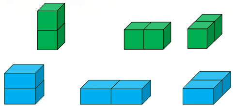
抽象分析总结能力，认识组合之后的立体图形的特点。2块正方体的三种拼搭方式，最后形成3个大小、形状完全一样的长方体。2块长方体的三种拼搭方式，最后形成的3个长方体大小、形状都不一样。
- 只有平平的面才能拼在一起。
- 2个圆柱只能按照一种方向拼成一个大圆柱。因为圆柱有弯弯的面，弯弯的面没办法拼到一起，圆柱有平平的面，只能将平平的面拼在一起。
- 2个球没办法拼到一起。因为球没有平平的面，所以不能拼。
- 立体想象能力
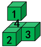
- 立体想象能力来自动手实践，绝不是强硬灌输的。要获得立体想象能力，就必须多玩积木。
- 4个相同的小正方体拼搭，能拼出几种形状？
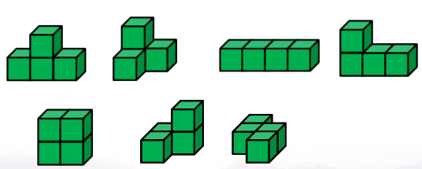
(1)如果拼搭后形状相同、方向不同，应认为是同一种形状。
(2)应按照3种空间方向拼。
- 4个相同的小长方体拼搭，能够拼出几个不同的长方体？
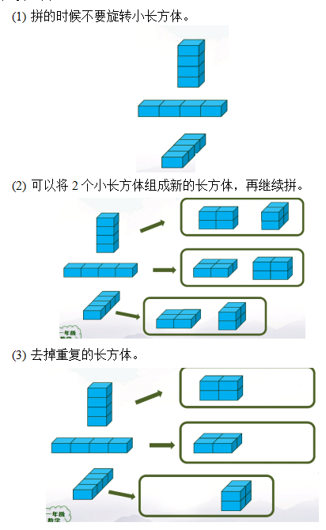
- 思考能力
- 充分理解问题要求，搞清楚规则；然后尝试解决问题，解决问题的时候，会遇到各种各样的困难，要发现新问题，多多思考，不断修改，直到用最好的办法解决问题。
- 用上所有10块积木，看谁搭的又稳又高。
- 数量和数字
- 常识
- 能够对事物、人进行简单的分类。
- 人的一只手有5个手指，2只手有10个手指。
- 数数
- 能够1个1个、2个2个、3个3个、5个5个地数数，数到100。
- 能够从小到大、从大到小地数数。
- 识图数数的时候，要按照从左到右、从上到下的顺序数；可以在图上作标记以不重复、不遗漏（不重不漏），数一个，标记一个，有标记的不再重复数。做标记，除了用“点子”，还可以画勾、三角、方块。如果图上有不同的事物，可以使用不同的形状为事物做标记。
- 如果已经知道事物、人其中一部分的数量，可以接着这部分继续数完，得到数量。
- 表示数量
- 理解事物的数量与数数的方法、方向无关。
- 事物、人数量的简单抽象：多做实践，使用教具（圆片、小棒、计数器）表示事物、人的数量。
- 事物、人数量的简单抽象：多做实践，画圆点（点子）表示事物、人的数量。
- 使用数字表示数量
- 数量的数字抽象：使用数字表示数量。如1表示一面国旗，一个足球，2表示两个单杠等。
- 数字的书写：1位数占左半格，2位数占满田字格。注意起笔、收笔、拐弯、交叉位置，要写得饱满，占满格，8不封口。具体参考数学书中的示例。
- 对进制的初步认识
- 可以将10个小棒看作一组（用皮筋束柱），看到一组小棒，就知道是10个小棒。
- 认识计数器上的十位、个位，知道计数器上十位上的1粒珠子代表个位上的10粒珠子，能够通过计数器写出2位数字。
- 认识2位数中的十位、个位。
- 数量及数字的关系
- 数量关系
- 概念
- 一一对应：一个对着一个
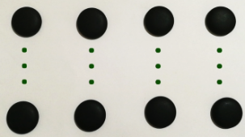
- 同样多：将两种事物“一一对应”后，若两种事物都没有“多余”的，则两种事物“同样多”。
- 多：将两种事物“一一对应”后，若有“多余”的，则多余的事物“多”。
- 少：将两种事物“一一对应”后，若有“多余”的，则没有多余的事物“少”。
- 应用
- 使用教具（圆片、小棒），按照一一对应的方法，表示同样多、多、少。
- 已知两种事物数量的关系及其中一种事物的数量，能够说出另一种事物的数量，并理解在两种事物数量不同的情况下，另一种事物的数量可能不仅仅只有一种正确答案。
- 同样多
- 多
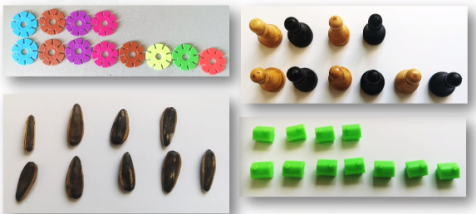
- 少
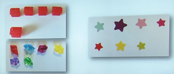
- 在不“正对”的情况下，能够不使用事物的队形或长度，而使用连一连的方式完成“一一对应”或采用数数的方法，正确比较两种事物的数量关系。
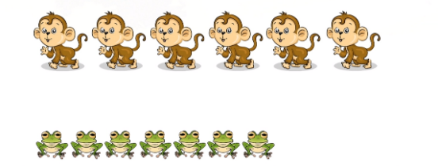
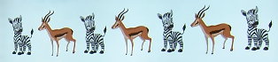
- 完整、准确说出数量关系
- 要素
- 事物的名称
- 量词（量词正确更好）
- “数”（与量词结合指代数量）、“比”（用于数量不同）或“与”（用于数量相同）
- 数量关系：“同样多”、“多”、“少”
- 示例
- 小兔的只数与砖的块数同样多
- 小猪的只数比木头的根数少
- 木头的根数比小猪的只数多
- 完整、准确的回答问题
- 如问题是“斑马多还是羚羊多”，不能仅回答“多”或“斑马多”，而应该完整回答“斑马比羚羊多”，最好的回答是“斑马比羚羊多，羚羊比斑马少”，回答要体现两种事物之间的数量关系，最好的回答不仅体现数量关系，还体现了不同比较方式得到的不同结果。
- 数字关系
- 符号和概念
- 相等：会用“等号”（“=”，读作“等于”）表示“同样多”。等号两边的数量相等
- 大于：会用“大于号”（“>”，读作“大于”）。3只小猴比2个香蕉多，就是3比2大，用“3>2”表示，读作“3大于2”。
- 小于：会用“小于号”（“<”，读作“小于”）。3只小猴比4个梨子少，就是3比4小，用“3<4”表示，读作“3小于4”。
- 记忆“=”、“>”、“<”
- “=”最好记，表示左右两边的数量“同样多”。
- “>”左边张口、右边没张口；“<”右边张口、左边没张口；对于“>”、“<”来讲，哪边张口就是哪边大。
- 符号书写
- 会在田字格中书写“=”，占左半格。上面的横在横中线上面，下面的横在横中线的下面，两条横线同样长。可以使用尺子画两条横，确保横画的直。
- 会在田字格中书写“>”、“<”，占左半格。可以使用尺子画两条线，确保线直。
- 应用
- 圆圈中填写“=”、“>”或“<”
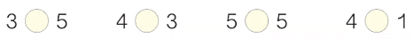
- 已知关系及一个数字，能够完整的说出另一个数字。思考问题要全面，理解在大于、小于情况下，另一个数字可能不仅仅只有一个正确答案。
因为是小于号，所以比4颗少，3颗；2颗和1颗也比4颗少，所以还可能是2颗、1颗；只要比4颗少，都有可能
猴哥哥说的一定对吗？不一定对，猴弟弟有3个桃子，猴哥哥从篮子里面拿出来了3个桃子，现在猴弟弟的桃子数量与猴哥哥拿出来的桃子数量同样多；猴哥哥的篮子上面盖满了叶子，看不到篮子里面是不是还有桃子；如果猴哥哥再从篮子里拿出桃子，猴哥哥的桃子数量就比猴弟弟的多；如果猴哥哥的篮子里没有桃子了，猴哥哥的桃子数量与猴弟弟的同样多；所以猴哥哥说的不一定对。
- 数量直觉
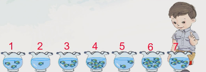
找到有7条鱼的鱼缸，一眼就能看出一些鱼缸中的鱼非常少，不用数肯定少于7条。
- 0
- “0”就像1、2、3这样的数一样，也是数。如门牌号、车牌号上的0。
- “0”表示没有。如剩余车位0。
- “0”表示起点。如尺子上的0。
- “0”表示分界线。如温度计上的0。
- 0比1小1。
- 第几
- 认识数量和第几的区别
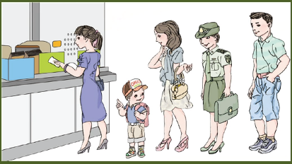
从前向后数，将第4个人圈出来
左边的圈法是正确的、右边的是错误的。队伍中人们面朝前，背朝后，从前向后数，穿蓝色裙子的阿姨是第1个人，小朋友是第2个人，穿短裙的阿姨是第3人，穿军装的阿姨是第4个人，圈出穿军装的阿姨是正确的；右边的图，将第1个人、第2个人、第3个人、第4个人都圈了出来，圈了4个人，圈的不是第4个人，是错误的。看来“第4个人”，就是排在第4的那1个人呀。
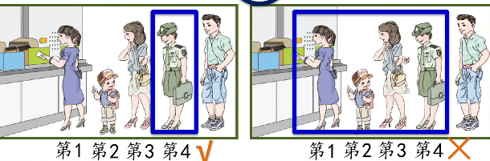
- 数数的方向
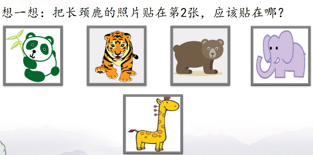
把长颈鹿的照片贴在第2张，应该贴在哪里？
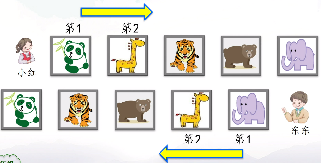
- 如果数数的方向是从左向右，长颈鹿的照片应该贴在熊猫照片和老虎照片中间；这时熊猫照片是第1张，长颈鹿的照片是第2张；
- 如果数数的方向是从右向左，长颈鹿的照片应该贴在大象照片和狗熊照片中间；这时大象照片是第1张，长颈鹿的照片是第2张。
- 原来，观察的角度不同，数数的方向变了，描述长颈鹿照片的位置也会发生改变。
- 看来，我们要贴好长颈鹿的照片，不光要知道长颈鹿的照片排在第几张，还要知道数数的方向，也就是从哪边开始数的。
- 常见的数数方向
- 从左向右
- 从上向下
- 从前向后
- 赛跑：从前向后，从终点向起点
- 楼房：从下向上
- 认识数量和第几的联系
- 认识到数字不仅能表示“数量”，还能表示“第几”的那一个事物。
- 从前向后第4个人中的4表示从前向后数，排在第4的那1个人；还表示从第1到第4一共4个人。
- 准确描述第几
- 准确的说出事物的位置，不光要说对第几，还要说清数数的方向。
- 练习
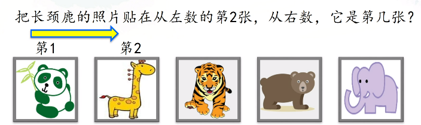
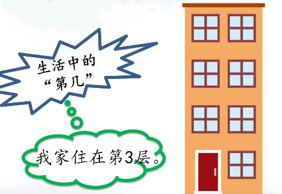
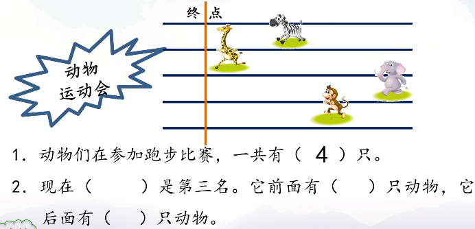
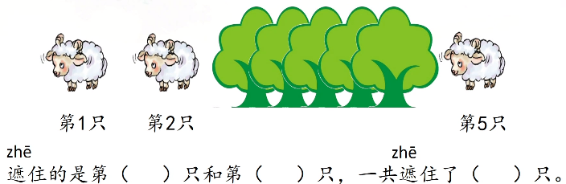
- 之间的数量问题
- 从左向右数，小华排第10，小红排第15，小华和小红之间有几人？
- 一共有10人，从左向右数，小华排第8；从右向左数，小红排第4；小华和小红之间有几人？
- 位置
- 上、下、前、后
- 具备上、下的基本概念。知道人的头在上、脚在下，楼房一楼在下，顶楼在上，楼层是从下向上数的。
- 具备前、后的基本概念。知道人脸朝的方向是前、背对的方向是后；车船头方向是前、车船尾方向是后等。
- 理解“上”、“下”、“前”、“后”不仅只包含紧挨参照物的事物。汽车下边有什么？有火车、轮船（轮船在火车下边）
- 理解“最”：“最上边”、“最下边”、“最前边”、“最后边”。汽车下边有什么？有火车、轮船（轮船在火车下边）；什么在最下边？轮船。
- 左、右
- 具备左、右的基本概念。能分清左右手、左右臂、左右脚、左右腿、左右眼、左右耳；左手、左脚、左臂、左腿一侧是左半身、右手、右脚、右臂、右腿一侧是右半身。
- 具备“靠右行走”的概念，靠右行走是指在道路上靠着自己右侧行走。
- 理解“左、右边”、“最左边”、“最右边”。铅笔的右边有什么？（不仅是橡皮，要把右边三个说完整）什么在最左边？（铅笔）
- 能够找到图片中人、小动物的左手、右手，通过图片中人、小动物的左手、右手分辨图片中人、小动物的左边、右边。（通过靠右行走找规律，面向我们的人，他的右手在我们的左边，他的左手在我们的右边。这个规律不用理解，记住即可）
- 人、小动物有自己的左边、右边。其他事物没有自己的左边、右边。
- 能够区别“图中的左、右边”和“谁的左、右边”。小东和小兰谁在左边，谁在右边？小东在小兰的左边还是右边？图中的左右边只看事物在图中的位置；谁的左右边要找到它的左右边。
- 中间
- 火车在轮船上面、汽车下面，所以火车在轮船和汽车中间；货车在轿车后面、客车前面，所以货车在轿车和客车中间。
- 小东在小兰的左边，小东在小明的右边，所以小东在小兰和小明的中间。
- 比的标准：和谁比，就是比的标准。
- 准确描述位置
- 要素
- 事物的名称
- 参照物的名称（比的标准）
- “在”字样
- 通过“上”、“下”、“前”、“后”、“左”、“右”准确说出事物的位置
- 示例
- 火车在汽车的下面。
- 橡皮在铅笔的右边。
- 汽车在最上边。
- 铅笔在最左边。
- 分清那个、哪些：小玉后面有哪些同学？小玉后面的那位同学是谁？哪些同学是小玉后面的所有同学；小玉后面的那位同学是紧挨小玉身后的那一位同学。
- 认识尺子
- 尺子以0为起点
- 尺子有大格
- 尺子上右边的数比左边的数大
- 认识钟表
- 能够绘制表盘、表盘上数字位置、时针、分针
- 知道钟表上的12是时针、分针的起点
- 知道顺时针、逆时针
- 认识几点整
- 认识快到几点
- 认识刚过几点
- 知道一天24小时
- 一天时针转2圈
- 能够按照时间对应日常生活